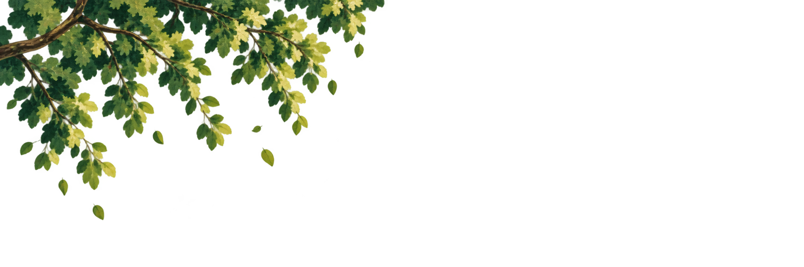
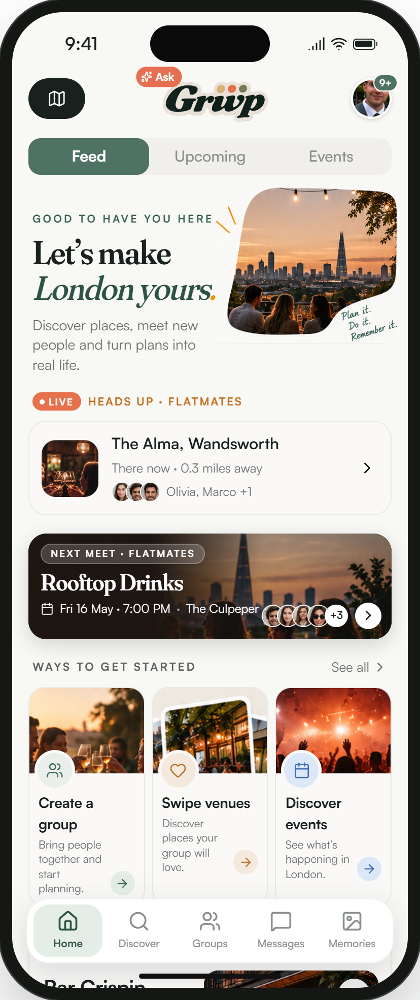
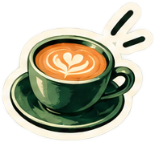
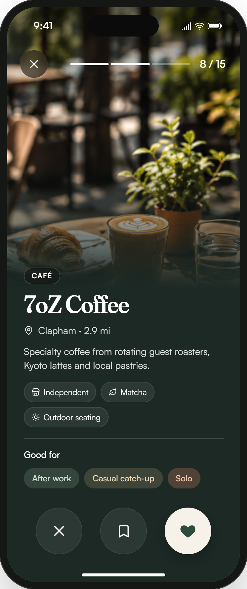
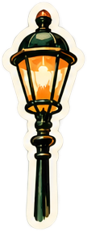
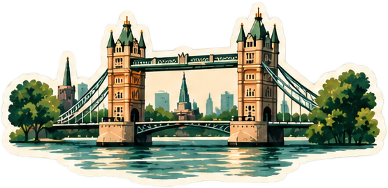

01
Discover
Grwp suggests places you'd love, in the areas you love. On your own or with your friends.

Grwp finds the place that works for everyone.
You’re on the list. We’ll email you once, when Grwp launches. Changed your mind? Email privacy@grwp.app and we’ll remove you.
Grwp suggests places you'd love, in the areas you love. On your own or with your friends.

When you and your friends like the same place, that's a match.

Pick a day and a time. You already know everyone loves the place, so the planning's done.

What Grwp's all about. Turn up. Real time spent with your people.

Every meet becomes a memory. Everyone adds their photos, so nothing gets lost.

Someone says we should do something. Everyone agrees. Somebody has to pick what and when, and nobody does. Three weeks later it's still sat in the chat.
And when you do get out, it's the same handful of places — because finding something new takes an hour nobody has.



A café you've walked past for years. A gallery that's on this week. A Saturday morning run club. A restaurant ten minutes away you've never heard of.
You tap the ones you'd actually turn up to and skip the rest. Takes a minute. Tomorrow there's a new fifteen.




Finding something you'd like is easy. Finding something six of you would all like is the actual problem.
Grwp AI sits in your group chat and knows what the group likes together. Ask it where you should go and it answers for all of you. When the chat's gone quiet, it puts something up.
Six people took photos. They're on six phones. Somebody says they'll send them round and never does.
On Grwp, once you've been, the plan becomes a memory on its own. Where you went, who came, everyone's photos in one place.
Only the people who were there can see it. No profile, nothing to post — it's just kept.

Your circle shrinks. Making new friends means turning up somewhere alone and hoping, and most people don't.
Communities on Grwp make it easy. Anyone can start one — you set what it is, where it meets, and who can join.
Join the waitlistGrwp opens in London first, on iOS and Android, later this year. Leave your email and we'll tell you the day it's ready.
One email when we launch. Unsubscribe anytime. PrivacyYou're on the list. We'll email you once, when Grwp launches. Changed your mind? Email privacy@grwp.app and we'll remove you.